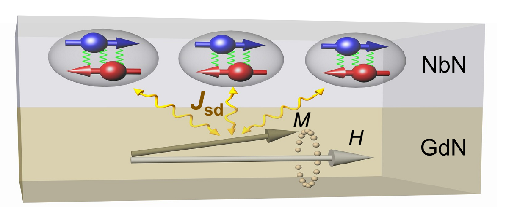
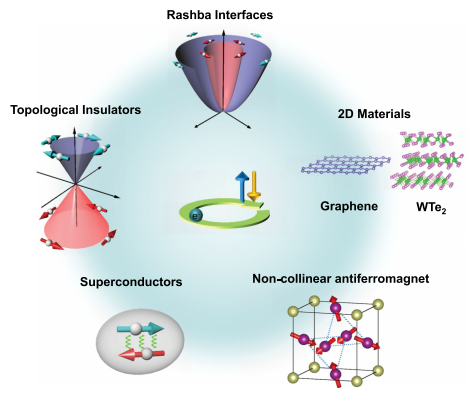

Welcome to Our Lab Our group focus on the experimental studies related to spintronics and quantum materials, including: ♦ Spin current as a probe for quantum materials ♦ Growth of quantum materials thin films ♦ Quantum materials for spintronics applications For more information, see Research
Magnon Transport in Quasi-Two-Dimensional van der Waals Antiferromagnets Wenyu Xing, Luyi Qiu, Xirui Wang, Yunyan Yao, Yang Ma, Ranran Cai, Shuang Jia, X.C. Xie, and Wei Han* Physical Review X 9(1), 011026 (2019) High-Mobility Spin-Polarized Two-Dimensional Electron Gases at EuO/KTaO3 Interfaces Hongrui Zhang, Yu Yun, X. Zhang, H. Zhang, Yang Ma, X. Yan, F. Wang, G. Li, R. Li, T. Khan, Y. Chen, W. Liu, F. Hu, B. Liu, B. Shen, Wei Han*, and Jirong Sun* Physical Review Letters 121, 116803 (2018)  Probe of Spin Dynamics in Superconducting NbN Thin Films via Spin Pumping Yunyan Yao, Qi Song, Yota Takamura, Juan Pedro Cascales, Wei Yuan, Yang Ma, Yu Yun, X. C. Xie,Jagadeesh S. Moodera and Wei Han* Physical Review B 97, 224414 (2018)  Quantum materials for spin and charge conversion Wei Han, YoshiChika Otani & Sadamichi Maekawa, npj Quantum Materials 3, 27 (2018)